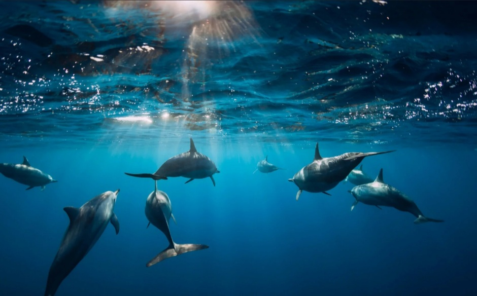
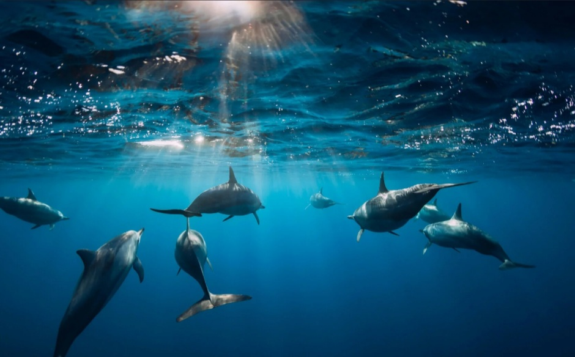

Advanced Rent a boat
Unajmite luksuzni privatni brod sa mini barom i skiperom. Uživajte u moru, oticima i plažama istražujući hrvatsku obalu na najbolji mogući način.

 



-
O brodu
-
Može ugodno smjestiti do 8 osoba -
Motor od 140 konjskih snaga -
Novi brod za brzo, sigurno i luksuzno krstarenje
Što vam nudimo!
Ukrcavanje
Mjesto ukrcavanja gostiju može biti uz more ili na cesti.
Mjesto i vrijeme
Mjesto i vrijeme prijma je fleksibilno prema željama i potrebama gostiju.
Luksuz
Cilj je pružiti našim gostima luksuzne usluge visoke kvalitete.
Područje krstarenja
Krstarenje u području Istre i Bujštine.
Dodatne usluge
Tu su također i dodatne usluge mini bara, raznih vodenih sportova, pecanje i mnoge druge.
Tečnost skipera
Skiper je tečan u engleskom, njemačkom i talijanskom jeziku. Što omogućuje kvalitetnu komunikaciju sa gostima razne nacionalnosti.
Dođite na putovanje s nama
- Područje Umaga
- Fleksibilno vrijeme
- Fleksibilno mjesto
- Uz more
- Ili na cesti
- Brijuni
- Rovinj, Portorož, Lim fjord, Vrsar
- Poreč, Novigrad
- Pula, Medulin
- Uživanje u vožnji
- Skijanje na vodi
- Muzika
- Mini bar
Zanimljiva mjesta koja možete obići s nama
Brijuni
Brijuni su otoci na južnoj obali istarskog poluotoka. Sastoje se
od 14 malih otoka koji pripadaju Nacionalnom Parku Brijuni.
Na otoku Veli Brijun, koji je otvoren za posjetitelje, se nalazi
marina za jahte, izvrstan restoran i rezidencija bivšeg
jugoslavenskog predsjednika Josipa Broza Tita, kao i njegov osobni
automobil, muzej i mnoge druge zanimljivosti, kao i pješčana
plaže.

Rovinj
Uz Dubrovnik, Rovinj je najposjećeniji grad hrvatske obale. Ovaj
šarmantni stari mediteranski grad je smješten na nekoj vrsti
poluotoka. Ima veličanstven pogled na more sa sjevera, zapada i
juga. Pruža fantastičan pogled na obližnje otoke.
Njegove
povjesne kamene ulice, crkva sv. Eufemija, izvrsna gastronomska
ponuda sa istarskim tartufima, pršut, vino, sir, maslinovo ulje,
morski specijaliteti, ostavljaju posjetitelje bez daha već
nekoliko decenija.
Poreč
Poreč je također mediteranski grad na jadranskoj obali. Nalazi se samo na 20 minuta udaljenosti od Umaga. Pruža veliki izbor plaža, otoka, restorana i povijesnih prizora kao što je Eufrazijeva bazilika(UNESCO).

Pula
Pula se nalazi 20 minuta južno od Brijuna. Najpoznatija je po rimskom koloseumu, koji datira još iz rimskoga carstva. Koloseum u Puli je jedini očuvani primjer drevne rimske arene, zajedno sa koloseumom u Rimu. Tu su također i gradska vrata iz rimskoga carstva i hram rimskoga cara Octaviana Augusta, kao i mnogi muzeji, restorani, trgovi i parkovi.
Lim fjord
Lim fjorn se nalazi između Vrsara i Rovinja. Dug je 7 kilometara. Služi kao farma školjki i turistička atrakcija. Tu su i privezišta za turističke brodove, restorani, barovi i trgovine suvenirima.


Započni avanturu s nama
Pošalji nam email, čekamo te da kreneš s nama na predivno putovanje!